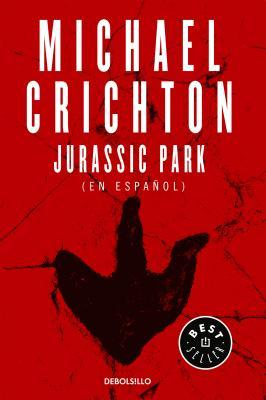

Jurassic Park
Reseña por Jorge I. Zuluaga

Ver detalles · Ver reseña en GoodReads (necesita cuenta)
Como cualquier persona que haya vivido parte de su vida adulta (o su temprana juventud) durante los años 90, el nombre "Parque Jurásico" o "Jurassic Park" solo nos trae a la memoria el nombre de la película de Steven Spielberg, que hizo las delicias de niños y adultos por aquellos años. Creo que todos recordamos que esta fue la primera película en la historia (no tengo datos, pero tampoco dudas) en la que pudimos ver una reconstrucción realista de dinosaurios bien conocidos (y otros no tanto) y de su comportamiento.
Tampoco tengo dudas (pero tampoco datos) sobre el positivo impacto que esta película (y las otras de la franquicia) debió producir en la vocación de muchas personas jóvenes que, después de verla, seguro decidieron dedicarse a la paleontología o la paleobiología.
En mi propia casa, mis hijos, Daniel y Andrés, que entonces eran solo unos niños, vieron muy amplificado el interés que ya sentían (como casi cualquiera de su edad) por estos animales extintos. Yo mismo, acicateado por su interés y, sin duda alguna, por la película misma, me convertí por un tiempo en un "experto" en el tema (nunca con tan buena memoria como Daniel y Andrés) y disfruté por unos años de una pasión por la paleontología que todavía conservo. Aunque Daniel y Andrés, ya adultos, no se dedican a esta disciplina, todavía recuerdan esos años y vuelven a ver las películas de la saga con ilusión.
Toda esta introducción solo para decir que es, al menos para mí, inaudito que apenas hasta ahora me haya sentado a leer la novela que inspiró este suceso cinematográfico y que ahora reseño.
Como sucede tantas veces con las novelas que inspiran películas, la facilidad en el consumo del cine hace que pocas personas vuelvan la vista sobre las obras literarias que las inspiran, que les dediquen —al menos para las películas que más les interesan— tiempo a leerlas y disfrutar de la inmensa cantidad de detalles que se pierden en la "transposición cinematográfica". Mucho menos probable aún es que quienes disfrutamos de las buenas historias intentemos leerlas antes de ver las películas, una regla que me estoy tratando de imponer precisamente motivado por estas experiencias.
El resultado no podría ser otro. ¡Por supuesto, la novela de Crichton es mejor que la película de Spielberg! Parece una herejía, pero quienes quieran pueden comprobarlo personalmente.
Para empezar, hay que decir que la novela no es para todo el mundo. A diferencia de la película, que puede ser disfrutada tanto si te gustan como si no la ciencia y la técnica, *Jurassic Park* es una novela a la que le sacamos más provecho y la disfrutamos las personas a las que nos gustan los detalles técnicos y científicos realmente jugosos.
En algunos apartes me sentí transportado a las novelas de Andy Weir (*El Marciano*, *Proyecto Hail Mary*, *Artemisa*), no por el contenido, sino por la abundancia de los detalles técnicos y por las discusiones científicas y filosóficas de buen nivel que autores como Weir y, ahora sé, Crichton nos regalan a las personas amantes de la ciencia y la técnica. Y es que un autor que es capaz de poner en las páginas de un libro un aparte de un código de computadora, mensajes de error o parte de un mensaje en jerga científica escrita entre expertos, solo puede saber que le está escribiendo a las personas más *nerds* que le leen.
La mayoría de los eventos que vemos en la película están inspirados en apartes de la novela, algunos no muy fielmente, y se entiende por qué. Lo mismo sucede con los personajes, con algunas omisiones. Obviamente, hay en la película eventos de la novela que fueron completamente excluidos (o dejados para otras películas de la franquicia), algunos que eran ciertamente centrales. Pero se entiende que una adaptación cinematográfica, con sus restricciones de tiempo, exige sacrificios.
Esto lo menciono, al hablar de la novela, porque algunos de esos personajes, escenas y situaciones que fueron excluidos de la película y que están presentes en la novela, amplifican mucho el disfrute de esta obra. Este es otro efecto conocido de leer las obras en las que se basan las películas: los libros se disfrutan más cuando descubres que contienen la respuesta a preguntas que no encontrabas en la película o que rellenan los personajes y las partes de la trama que parecen faltantes en la adaptación cinematográfica.
Me impactó mucho descubrir que la novela era mucho más cruda que la película. A diferencia de la ascética representación de los ataques y el resultado de los mismos sobre el cuerpo de las víctimas en la película, la novela es bastante explícita en las descripciones y, por la misma razón, bastante terrorífica. Hablando con Felipe Martínez, un amigo lector de Medellín del que descubrí —al momento de registrar la novela en Goodreads— que también la había leído recientemente, salió el término de "terror científico", que creo podría describir bien el género al que pertenece la novela, especialmente por los apartes más sanguinarios.
Ya un estudiante mío de astronomía, cuyo nombre no recuerdo, un verdadero apasionado por la paleontología, me lo advertía y ahora se los advierto a todas las personas que hayan llegado hasta aquí en la reseña: *Jurassic Park*, la novela, no es una entretenida y más o menos perturbadora aventura en el proyecto fallido de un loco multimillonario de revivir a los dinosaurios. Es una novela con apartes realmente perturbadores y terroríficos que nos transportan a épocas en las que nuestros antepasados, en lugar de estar en la cima de la cadena alimenticia (o las redes tróficas, como dicen las personas entendidas), éramos, como lo han sido muchos otros animales, simplemente presas provocativas y perseguidas por animales que solo se ven bonitos en los dibujos paleontológicos.
De todos los personajes de la película, el que más me gustó fue el de Ian Malcolm, el matemático escéptico que vimos representado por Jeff Goldblum en la película de Spielberg. Algunos de los mejores diálogos y las reflexiones más interesantes en el libro son las que realiza este personaje. Sus críticas al aparato científico y tecnológico son profundas y, 30 años después, siguen siendo plenamente válidas.
En resumen, *Jurassic Park* es una novela que tienen que leer las personas apasionadas por la ciencia que hayan disfrutado de la película de Spielberg y quieran descubrir la verdadera profundidad de la historia detrás de ella. Quienes busquen una obra literaria de alto vuelo, con personajes de gran profundidad, no encontrarán aquí lo que están buscando, pero tal vez se divertirán con una historia entretenida y con una buena dosis de terror científico.
No le doy el máximo puntaje porque, a pesar de todos los comentarios positivos que dejo en esta reseña, y como es común en obras destinadas más al entretenimiento que a la exploración profunda de la naturaleza humana (como lo son las buenas obras literarias), la novela tiene, por supuesto, algunos defectos. Situaciones y personajes a veces muy irreales. Saltos temporales o espaciales que no se pueden creer ni siquiera en un libro un poco fantástico.
P.D. Después de leer la novela y escribir la reseña, me senté a ver nuevamente la película. Las referencias que hice a la cinta en la reseña surgieron de lo que recordaba de ella. Con este nuevo repaso de la película, confirmo lo que comenté: es una buena adaptación; faltan personajes, hay transposiciones en el rol de algunos de ellos (en esta película la doctora Sattler tiene un papel un poco más protagónico), las escenas de ataques son menos sanguinarias que las del libro, etc. Sin embargo, me queda la sensación de que la película no envejeció muy bien. Es difícil para una cinta de ciencia ficción con efectos especiales de los 90. Pero lo regular que ahora se ve contrasta claramente con lo actual que se sigue leyendo la novela. Un punto más para Crichton.